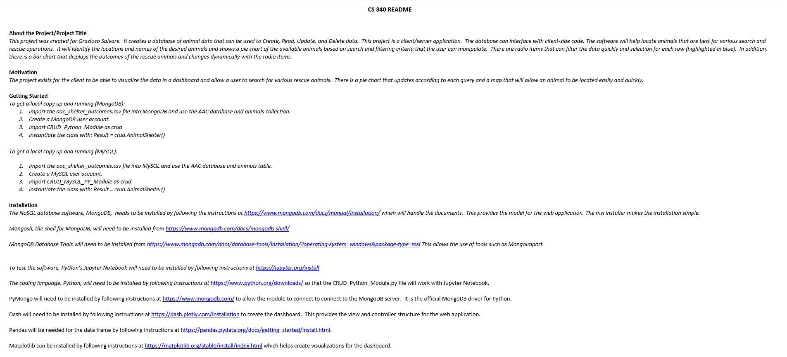

Skills and Abilities Acquired from the Artifact
This artifact was chosen because it uses MongoDB and I wanted to give the option to switch to a MySQL database. There are advantages and disadvantages
to both databases and it was important to allow for alternatives. MySQL is used by companies that require ACID or extra care about accuracy, with the data.
MySQL scales vertically, however, and MongoDB scales horizontally. The advantage of MongoDB is that the database is very flexible. MySQL is more defined and
structured. There are uses for both and I felt that it is important to have both available. I also improved the map on this application to center the marker
on the selected animal and to update regularly. This weeded out a bug that was frustrating the user. I also created test scripts for the CRUD operations
for MySQL. This application uses the Read functionality of the CRUD module. The user doesn’t have a way to engage in an SQL injection attack, so there is a
nice level of security by using the radio items for the specific searches.
Course Outcomes Met
I updated the ReadMe file to incorporate the MySQL database and this fulfills the first two outcomes for building collaboration and designing communications
that are for specific audiences and technical in nature. The options to use either database, MongoDB and MySQL, demonstrates the outcomes that allows for
design trade-offs to be considered and delivers value for industry-specific goals. Keeping the inputs from allowing SQL injection attacks demonstrates the
outcome of keeping security in mind. Also, fixing bugs, such as the map marker updating correctly is always a good security measure. The database was fixed
with a username and password and role-based access was created. This prevents unauthorized access to the database and limits the features that may be accessed
to the necessary functions.
Challenges and Reflection
One of the big challenges was that the table was showing, but the visualizations weren’t there. After observing the table, I realized that it didn’t have
column headers, so I added a separate line to get the column headers and put them in the dataframe. Then, it started working. I noticed that there was a
problem with the map. Originally, the marker wasn’t centered on the screen for the selected animal and I had to manually manipulate the map location. I
changed the code to center the selected animal, with its coordinates. Then I noticed that clicking the marker would add a pop up for the animal name, but
the next selected animal would not be updated to a new marker placement until the marker was clicked a second time. I fixed this by wrapping the map in
html.div and adding a key for the single row. When the key changes, a new map is rendered. Now, it works as expected.
 Figure 1 shows the first screenshot of the CRUD Testing Script in Jupyter Notebook and database connection.
Figure 1 shows the first screenshot of the CRUD Testing Script in Jupyter Notebook and database connection.
 Figure 2 shows the second screenshot of the CRUD Testing Script in Jupyter Notebook and the Create and Read functionality.
Figure 2 shows the second screenshot of the CRUD Testing Script in Jupyter Notebook and the Create and Read functionality.
 Figure 3 shows the third screenshot of the CRUD Testing Script in Jupyter Notebook and the Update and Delete functionality.
Figure 3 shows the third screenshot of the CRUD Testing Script in Jupyter Notebook and the Update and Delete functionality.

Figure 4 shows the beginning of the ReadMe file that communicates the details to other professionals for collaboration.